XRoad
Lahendus võimaldab Dynamics 365 Business Centrali kaudu saata elektrooniliselt käibedeklaratsiooni ja tulu- ja sotsiaalmaksu deklaratsiooni (TSD) faili XML formaadis Maksu ja Tolliametisse X-Tee kaudu. Lahendus võimaldab küsida tagasiside failis sisalduvate vigade ja hoiatuste kohta ning kinnitada esitatud faili ja tervet deklaratsiooni.
Teenuse kasutamiseks peab ettevõte olema liitunud X-tee'ga. Eesti äriregistris registreeritud ettevõtete ja asutuste juhid saavad X-teega liituda läbi X-tee iseteeninduskeskkonna.
Business Centralis funktsionaalsuse kasutamiseks peab teenus olema Maksu- ja Tolliameti poolt avatud - https://www.emta.ee/ariklient/e-teenused-koolitused/e-teenuste-kasutamine/x-tee-teenused
KMD aruande saatmine Maksuametisse X-tee liidese kaudu
Seadistus
Lehel XTee seadistus saab üles laadida sertifikaadi: Toiminigud -> Lae sertifikaat üles. Sertifikaadi parool sisestada väljale Parool ja vajutada ENTER.
Välja Esitaja isikukood lisada MTA-s deklaratsiooni esitamise õigust omava kasutaja isikukood.
Selleks, et saata EMTA-sse kinnitatud KMD tuleb XTee seadistus lehel valida KMD saadetakse kinnitatuna:

Funktsionaalsuse kasutamine
KMD moodustatakse vastavalt Eesti lokalisatsioonile lehel KM tagastused (KMD).
Kui deklaratsiooni read on loodud ja kontrollitud, siis Vabasta dokument.
Deklaratsiooni saatmine käivitatakse: Avaleht -> Saada X-Tee kaudu EMTA-sse:
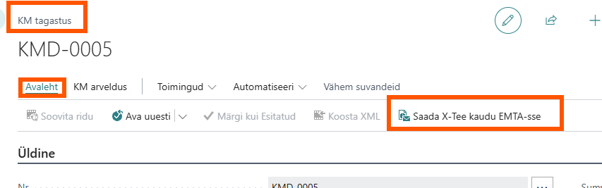
Oleku jälgimiseks on loodud väljad:
-
XTee logi kande nr. - täidetakse kande numbriga peale saatmist
-
XTee seisund - kuvatakse seisundid:
-
Saadetud - KMD on saadetud EMTA-sse
-
Vastuvõetud - BC-s kinnitamata KMD on EMTA poolt vastu võetud
-
Kinnitatud - BC-s kinnitatud KMD on EMTA poolt vastu võetud
-
Viga - EMTA on KMD vigade tõttu tagasi lükanud
Tööjärjekorra kanne 24014760 Uuenda XTee sõnumite seisundid pärib MTA-st vastused.
Sõnumilogid
Klikkides XTee logi kande nr. väljas olevale numbrile avaneb Xtee sõnumilogi
Saab vaadata nii Päringu- kui ka Vastussõnumeid klikkides vastavas veerus olevale Jah -le.
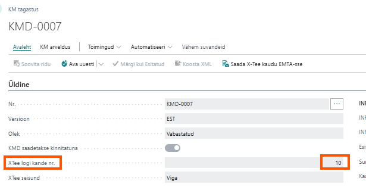
Ava sõnumiseisundilogi avab lehe Xtee sõnumiseisundilogi. Siin saab avada nii Päringusõnumeid kui ka Vastussõnumeid text formaadis.

MTA-st vastuste päringu saab käivitada ka käsitsi klikkides lehel XTee sõnumiseisundilogi Küsi vastust. Kommentaar "Ootel sõnumeid ei leitud" tähendab, et kõik MTA vastussõnumid on kätte saadud.
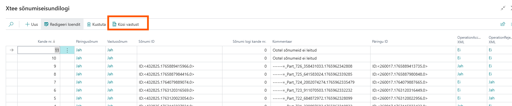
TSD aruande edastamine X-tee liidese kaudu
X-tee seadistused
Seadistused tehakse lehel XTee seadistus. Deklaratsioonide edastamisega seotud seadistused tehakse paanil "Üldine". TSD'ga seotud lisaseadistused on paanil "TSD":

TSD aruandefaili saatmine
TSD aruanne -> Toimingud
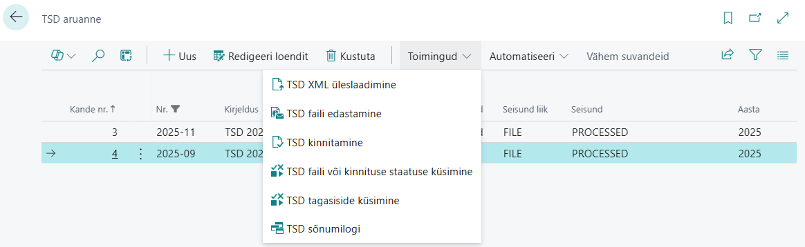
-
TSD XML üleslaadimine - Valmis TSD faili üleslaadimine (kuna hetkel programmis faili ei tekki, tulevikus kaob vajadus ära)
-
TSD faili edastamine - TSD faili saatmine Maksuametisse läbi uploadMime teenuse.
-
TSD kinnitamine - TSD kinnitamine läbi confirmTsd teenuse.
-
TSD faili või kinnituse staatuse küsimine - faili või kinnituse staatuse küsimise teenus.
-
TSD tagasiside küsimine - TSD tagasiside küsimine läbi getTsdStatus teenuse.
-
TSD sõnumilogi - avab TSD Xtee sõnumilogi.
TSD XML üleslaadimine
Avaneb aken, kus saab lisada TSD XML faili:
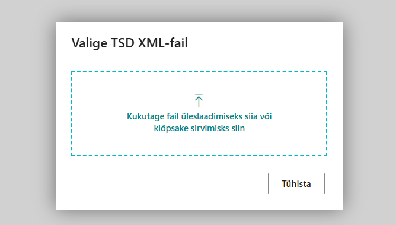
Kui fail on lisatud, TSD aruande tabelis veerus "Üles laaditud XML" on "Jah":
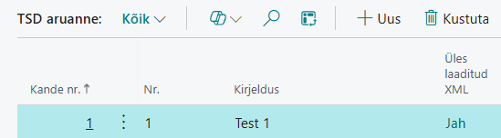
Nüüd saab TSD faili edastada.
TSD faili edastamine
Vali lintmenüült Toimingud -> TSD faili edastamine. Kui fail on edastatud muutub TSD seisund "Saadetud" ja Faili ID veergu tekib maksuametist saadetud faili ID, mis on vajalik ka järgmiste päringute tegemiseks.

TSD Xtee logi:
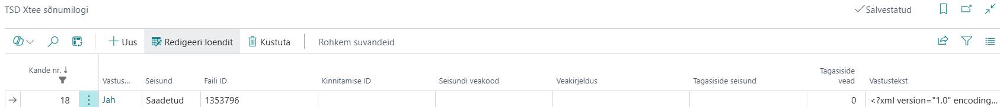
Kui faili ID ei tulnud, siis TSD staatus on "Viga". Põhjus on tehnilist laadi ja ei puuduta faili sisu.

Vaata üle, kas vajalikud X-tee seadistused on olemas või võta ühendust lahenduse administraatoriga.
TSD kinnitamine
Saab valida, kas toimub terve TSD või ainult üles laaditud faili kinnitamine. Terve TSD kinnitamine eeldab, et kõik TSD lisad on ootusepäraselt täidetud.
Vali lintmenüült Toimingud -> TSD kinnitamine.
Kui kinnitamis saatmine õnnestus, TSD seisund on "Kinnitatud", TSD Xtee sõnumilogi:

Kui kinnitamist ei toimunud, on seisund "Viga", TSD Xtee sõnumilogis näeb vea kirjeldust:
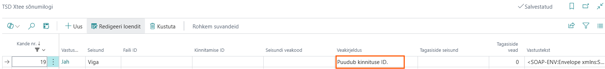
TSD faili või kinnituse staatuse küsimine
Päringuga küsitakse faili või kinnituse staatust, kas fail/kinnitus ootab töötlemist, töödeldud või viga töötlemisel.
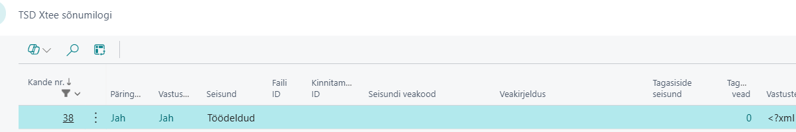
Kinnitatud deklaratsioon:

TSD tagasiside küsimine
Päringut teostatakse, siis, kui faili seisund on "Töödeldud", et selgitada välja, kas failis oli vigu/hoiatusi.
Kui failis on vigu, seisund on "Viga" ja veerus tagasiside vead näeb nende arvu.
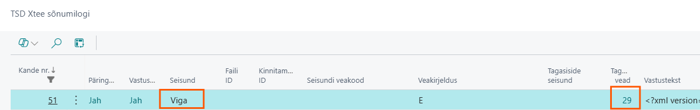
Klõpsates vigade arvul, avaneb tabel TSD tagasiside vead, kust näeb millisel TSD lisal, milliste isikute ridadega on probleeme. Veatüübid:
ERROR - viga, maksukohustust ei saa õigesti välja arvutada, deklaratsiooni ei saa kinnitada;
WARNING - hoiatus, ennetav teade, deklaratsiooni on võimalik ära kinnitada.
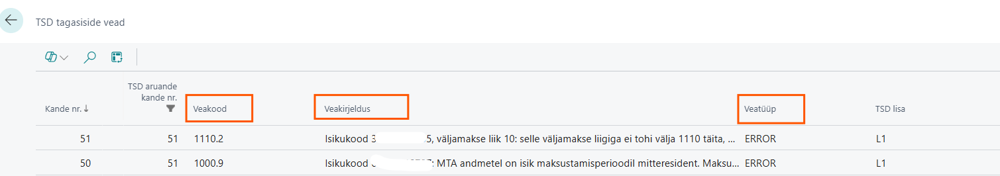
Kui failis/deklaratsioonis vigu ei esine, saab seda ära kinnitada.